Zdzisław Beksiński, va ser un pintor, fotògraf i escultor que va néixer a Sanok, Polònia el 24 de febrer de 1929. I va morir el 21 de febrer de 2005 a Varsòvia, Polònia.
Les seves obres tenen un estil únic que ell mateix anomenava 'gòtic' o 'barroc'. Avui en dia els artistes que busquen simular el seu estil poden arribar a anomenar aquest art com a 'body horror' o 'abstracte'. El seu art està molt enfocat a mostrar criatures i entorns surrealistes com si fos un malson.
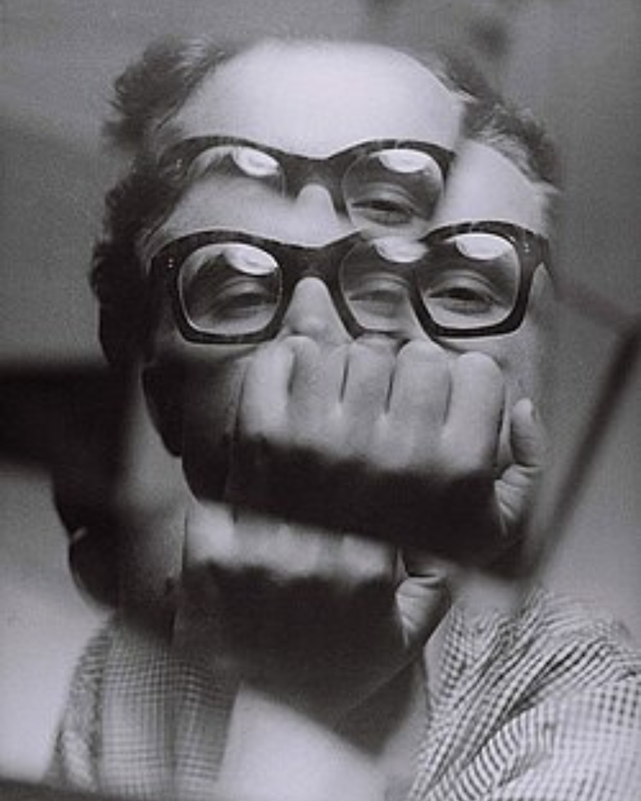
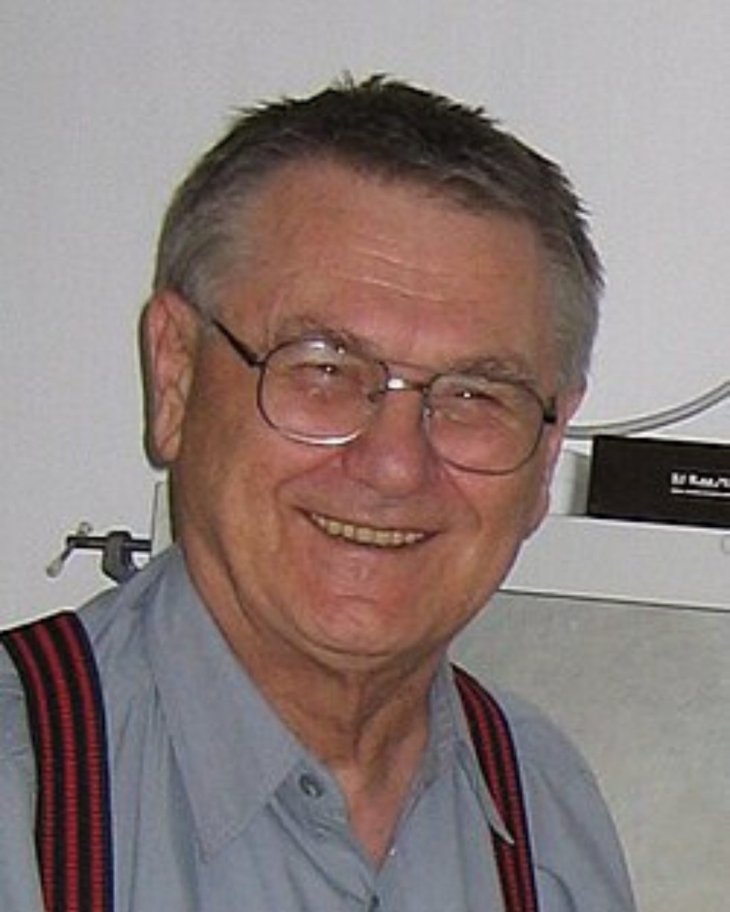
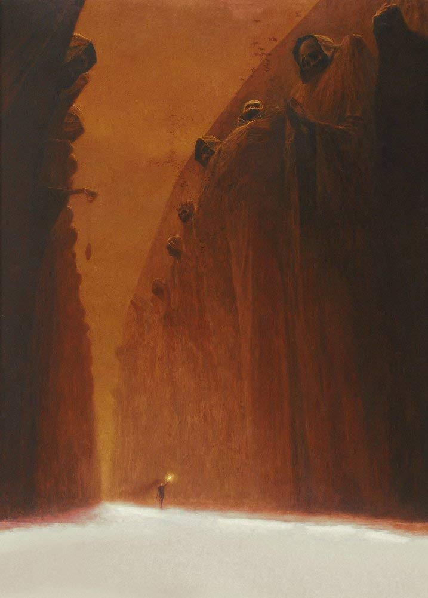
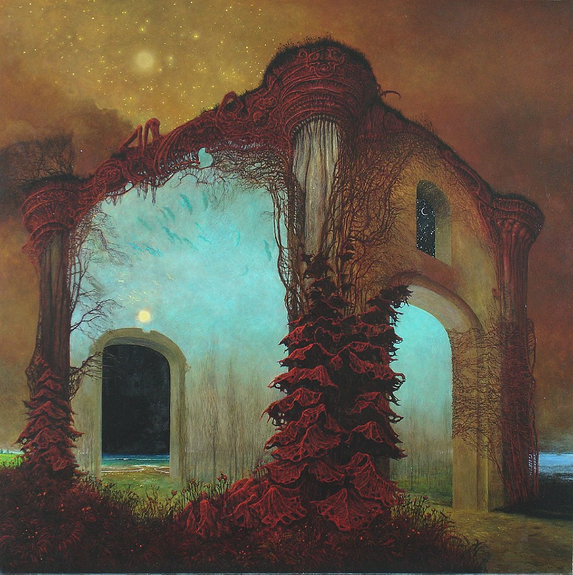
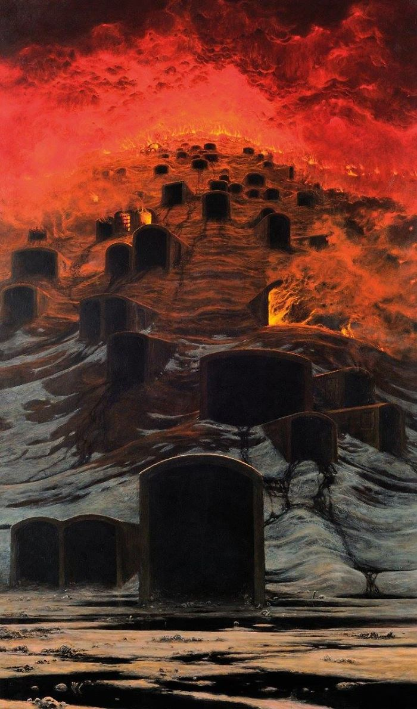
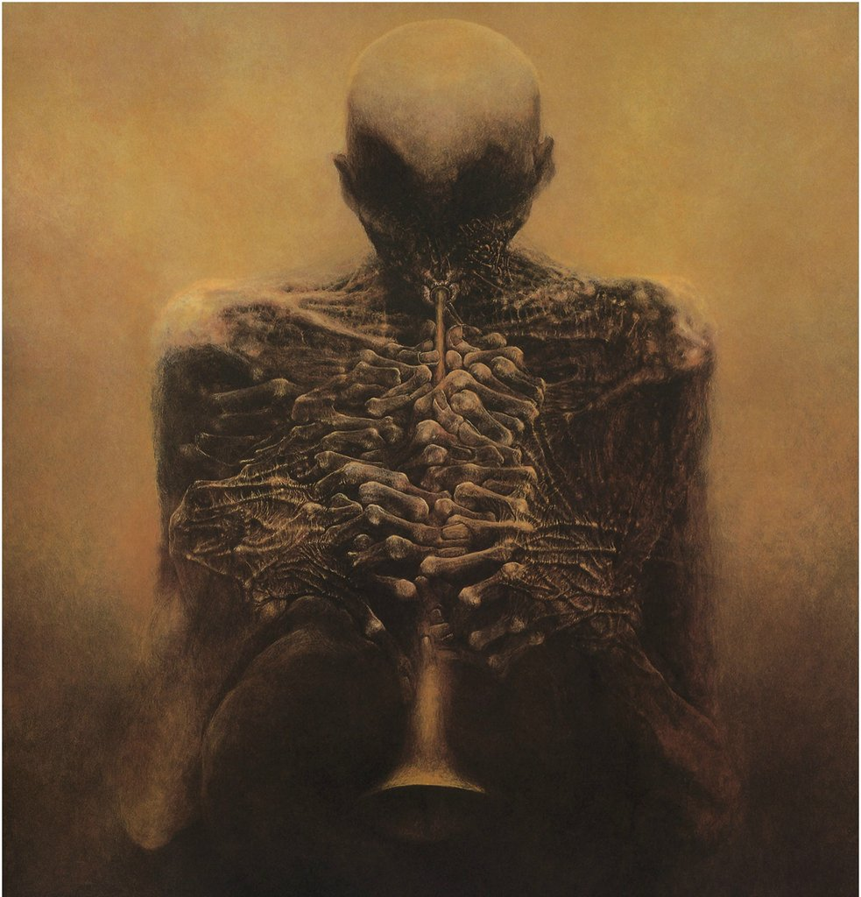
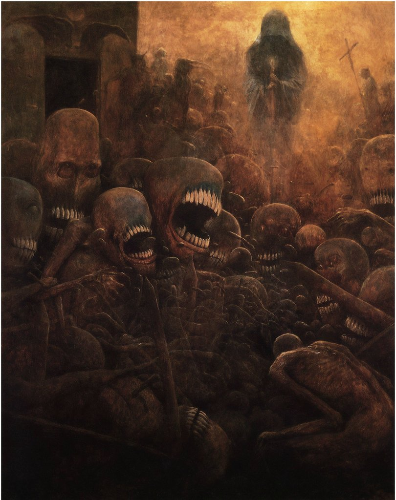
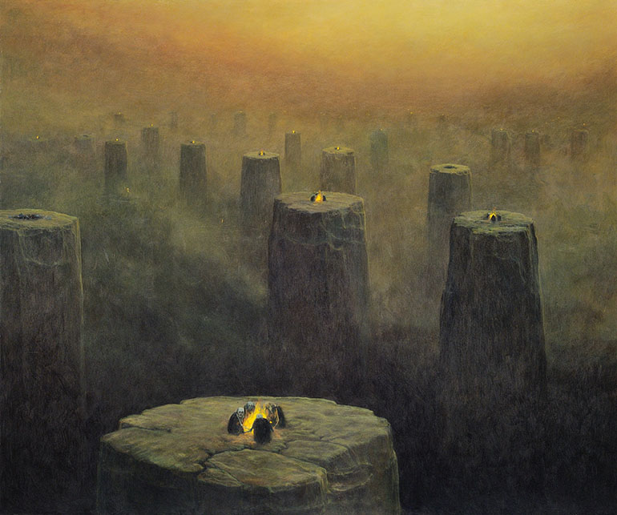
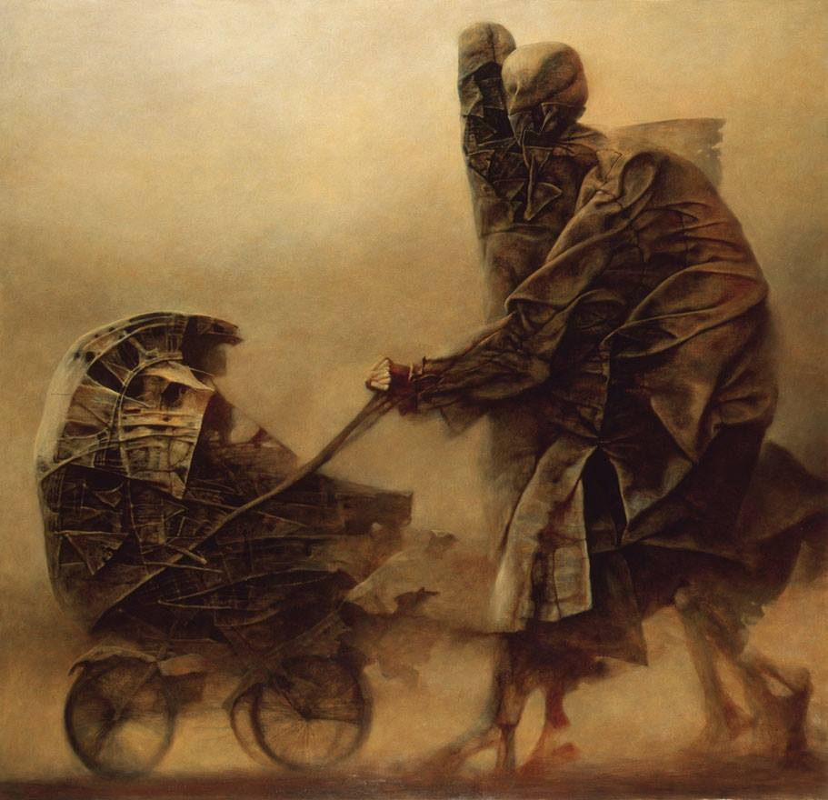
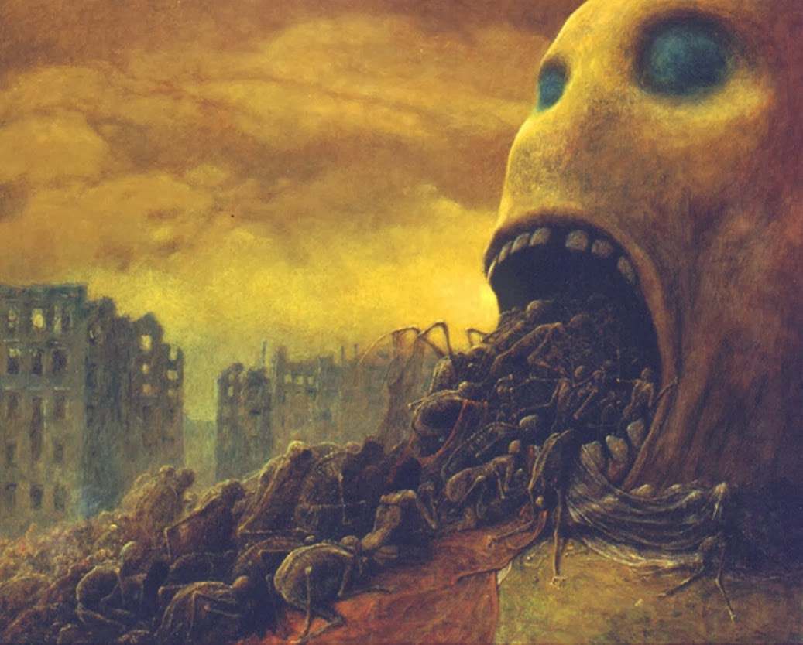
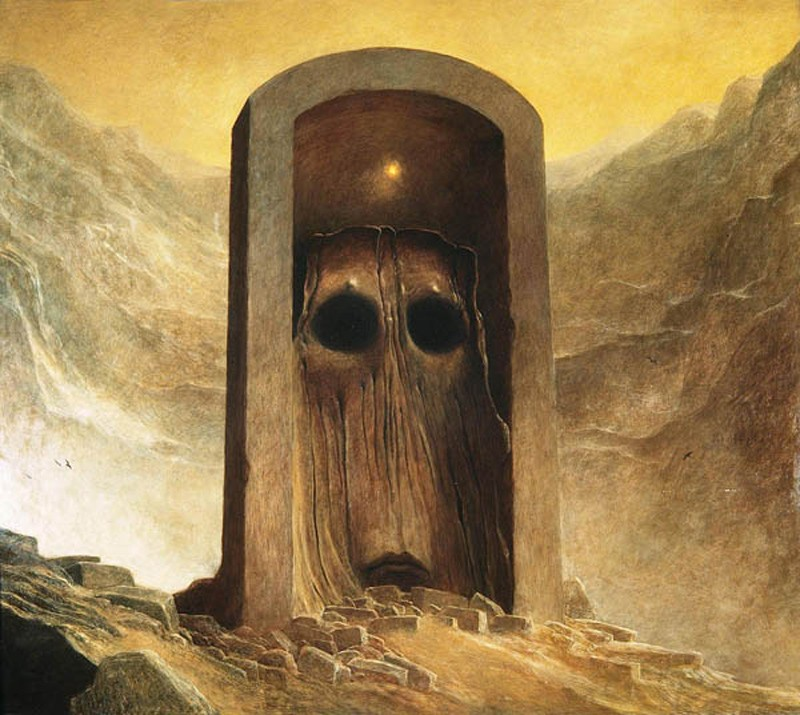
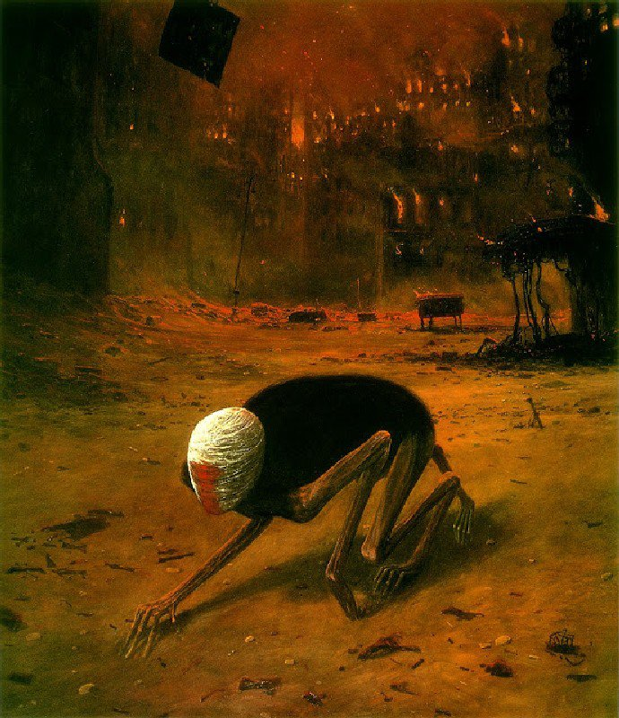
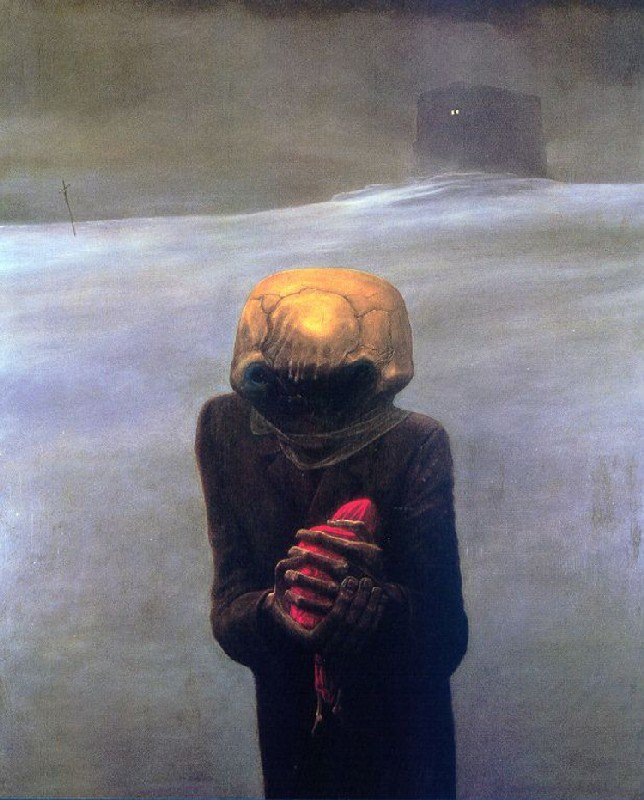
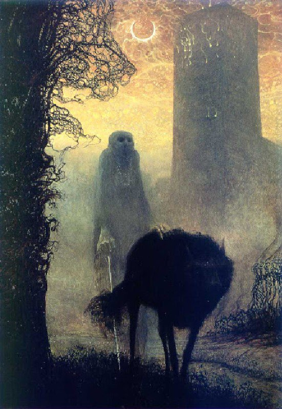
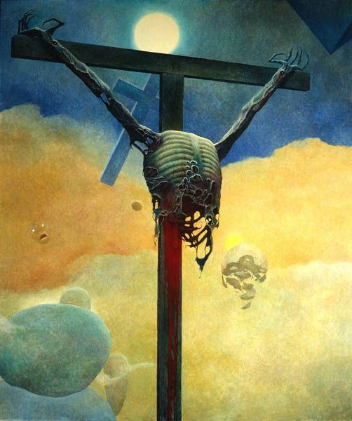